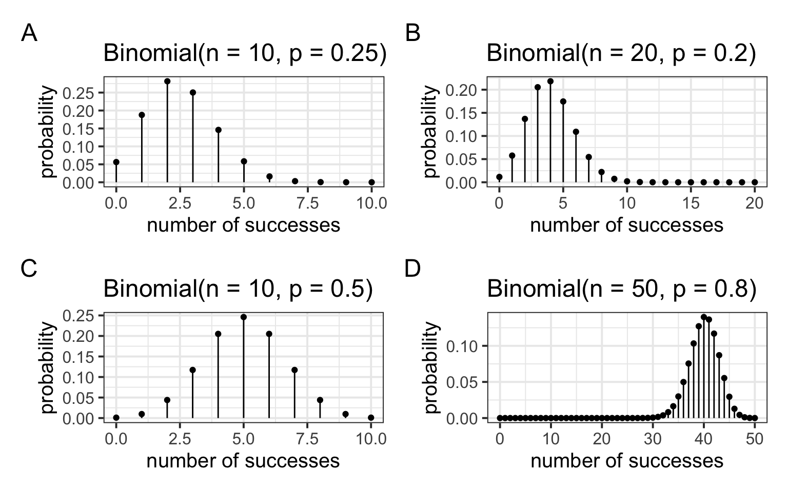

Discrete random variables
1 Random variables
Consider throwing three fair coins. The sample space of this random experiment is
\[ S = \{ TTT, \ TTH, \ THT, \ HTT, \ THH, \ HTH, \ HHT, \ HHH \} \]
Each outcome has an equal chance of occurring of \(1 / 8 = 0.125\), computed as one outcome divided by the total number of possible outcomes.
Often, we are only interested in a numerical summary of the random experiment. One such summary could be the total number of heads.
Random variable
We call a numerical summary of a random process a random variable.
Random variables are typically denoted using the last uppercase letters of the alphabet (\(X, Y, Z\)). Sometimes we might also use an uppercase letter with a subscript to distinguish them, e.g. \(X_1, X_2, X_3\).
A random variable, like a random experiment, also has a sample space and this is called the support or range of \(X\), written \(R_X\). This represents the set of possible values that the random variable can take.
2 Discrete vs continuous random variables
There are two different types of random variables, and the type is defined by their range.
We call a variable discrete or continuous depending on the “gappiness” of its range, i.e. depending on whether or not there are gaps between successive possible values of a random variable.
A discrete random variable has gaps in between its possible values. An example is the number of children in a randomly chosen family (0, 1, 2, 3, …). Clearly, you can’t have 2.3 children…
A continuous random variable has no gaps in between the its possible values. An example is the height in cm of a randomly chosen individual.
In this week’s exercises we will study discrete random variables.
3 Three coins example (continued)
In the 3 coins example, the possible values of the random variable \(X\) = “number of heads in 3 tosses” are \[ R_X = \{0, 1, 2, 3\} \]
meaning that \(X\) is a discrete random variable.
We denote a potential value of the random variable using a lowercase \(x\) and a subscript to number the possible values.
This is obtained as follows:

As we can see, each value of the random variable is computed from the underlying random experiment. There is one outcome only (TTT) leading to zero heads, i.e. \(X = 0\). There are three outcomes (TTH, THT, HTT) leading to one head, i.e. \(X = 1\). And so on…
The experiment’s outcomes are all equally likely, each having a \(1/8\) chance of occurring. However, since the random variable aggregates the experiment’s outcomes, the probability of the random variable taking a particular value is computed by summing the probabilities of the outcomes leading to that value.
Let’s try and obtain the same diagram as that shown above using R. We will be using the function expand_grid, which creates the sample space by listing all possible combinations.
library(tidyverse)
experiment <- expand_grid(coin1 = c('T', 'H'),
coin2 = c('T', 'H'),
coin3 = c('T', 'H'))
experiment# A tibble: 8 × 3
coin1 coin2 coin3
<chr> <chr> <chr>
1 T T T
2 T T H
3 T H T
4 T H H
5 H T T
6 H T H
7 H H T
8 H H H # A tibble: 8 × 4
coin1 coin2 coin3 prob
<chr> <chr> <chr> <dbl>
1 T T T 0.125
2 T T H 0.125
3 T H T 0.125
4 T H H 0.125
5 H T T 0.125
6 H T H 0.125
7 H H T 0.125
8 H H H 0.125rv <- experiment %>%
mutate(
value = (coin1 == 'H') + (coin2 == 'H') + (coin3 == 'H')
) %>%
group_by(value) %>%
summarise(prob = sum(prob))
rv# A tibble: 4 × 2
value prob
<int> <dbl>
1 0 0.125
2 1 0.375
3 2 0.375
4 3 0.125where \(1/8 = 0.125\) and \(3/8 = 0.375\).
We can provide a concise representation of a random variable \(X\), the set of all its possible values, and the probabilities of those values by providing the probability distribution of \(X\). You can think of the probability distribution of a random variable as a succinct way to provide a global picture of the random variable.
Probability distribution
The probability distribution of a discrete random variable \(X\) provides the possible values of the random variable and their corresponding probabilities.
A probability distribution can be in the form of a table, graph, or mathematical formula.
We visualise the distribution of a discrete random variable via a line graph. This graph gives us, with just a glance, an immediate representation of the distribution of that random variable.
ggplot(data = rv) +
geom_segment(aes(x = value, xend = value, y = 0, yend = prob)) +
geom_point(aes(x = value, y = prob)) +
labs(x = "Possible values, x", y = "Probabilities, P(X = x)")
As you can see, a line graph has gaps in between the possible values the random variable can take, exactly to remind us that the random variable can’t take values that are different from 0, 1, 2, and 3.
Alternatively, you could provide the probability distribution of the random variable in tabular form:
| x | P(X = x) |
|---|---|
| 0 | 1/8 |
| 1 | 3/8 |
| 2 | 3/8 |
| 3 | 1/8 |
Statisticians have also spent lots of time trying to find a mathematical formula for that probability distribution. The formula is the most concise way to obtain the probabilities as it gives you a generic rule which you can use to compute the probability of any possible value of that random variable. All you have to do is substitute to \(x\) the value you are interested in, e.g. 0, 1, 2, or 3.
Probability mass function
The probability mass function (pmf) of \(X\) assigns a probability, between 0 and 1, to every value of the discrete random variable \(X\).
Either of the following symbols are often used: \[ f(x) = P(x) = P(X = x) \qquad \text{for all possible }x \] where \(P(X = x)\) reads as “the probability that the random variable \(X\) equals \(x\)”.
The sum of all of these probabilities must be one, i.e. \[ \sum_{i} f(x_i) = \sum_{i} P(X = x_i) = 1 \]
Before we define the mathematical function, I need to tell you what a number followed by an exclamation mark means.
In mathematics \(n!\), pronounced “\(n\) factorial”, is the product of all the integers from 1 to \(n\). For example, \(4! = 4 \cdot 3 \cdot 2 \cdot 1 = 24\), and \(3! = 3 \cdot 2 \cdot 1 = 6\). By convention, mathematician have decided that \(0! = 1\).
The probability function of \(X\) = “number of heads in 3 tosses” makes use of the following numbers:
- \(3\), representing the number of coin flips
- \(\frac{1}{2}\), the probability of observing heads in a single flip of a fair coin
For the three coins example, the probability function of \(X\) is \[ P(X = x) = \frac{3!}{x!\ (3-x)!} \cdot (1/2)^x \cdot (1/2)^{3-x} \]
Let’s see if the formula gives back the table we created above.
-
For \(x=0\) we have:
\[ P(X = 0) = \frac{3!}{0!\ 3!} \cdot (1/2)^0 \cdot (1/2)^3 = \frac{6}{6} \cdot 1 \cdot (1/8) = 1/8 \]
And so on… If you want to see the rest, check the optional box below.
Optional: I want to see the other probabilities
-
For \(x = 1\) we have
\[ P(X = 1) = \frac{3!}{1!\ 2!} \cdot (1/2)^1 \cdot (1/2)^2 = \frac{6}{2} \cdot (1/2) \cdot (1/4) = 3 \cdot (1/8) = 3/8 \]
-
For \(x = 2\) we have
\[ P(X = 2) = \frac{3!}{2!\ 1!} \cdot (1/2)^2 \cdot (1/2)^1= \frac{6}{2} \cdot (1/4) \cdot (1/2) = 3 \cdot (1/8) = 3/8 \]
-
For \(x=3\) we have
\[ P(X = 3) = \frac{3!}{3!\ 0!} \cdot (1/2)^3 \cdot (1/2)^0 = \frac{6}{6} \cdot (1/8) \cdot 1 = 1/8 \]
As you can see, this formula will provide you the same values that are listed in the tabular representation of the probability distribution.
4 Centre: the expected value
Consider a discrete random variable with range \(R_X = \{x_1, x_2, \dots, x_n\}\)
The expected value (or mean) of a random variable \(X\), denoted by \(E(X)\), \(\mu\), or \(\mu_X\), describes where the probability distribution of \(X\) is centred.
We tend to prefer the name “expected value” to “mean” as the random variable is not something the has happened yet, it’s a potentially observable value. So, the expected value is the typical value we expect to observe.
The expected value of \(X\) is computed by multiplying each value by its probability and then summing everything:
\[ \begin{aligned} \mu = E(X) &= x_1 \cdot P(x_1) + x_2 \cdot P(x_2) + \cdots + x_n \cdot P(x_n) \\ &= \sum_{i} x_i \cdot P(x_i) \end{aligned} \]
For the three coins, the expected value is: \[ \mu = 0 \cdot \frac{1}{8} + 1 \cdot \frac{3}{8} + 2 \cdot \frac{3}{8} + 3 \cdot \frac{1}{8} = \frac{3}{2} = 1.5 \]
As you can see, 1.5 is not one of the possible values that \(X\) can take in that case, as it lies in the gap between the values 1 and 2. However, it is a fictitious number which seems to well represent the centre of that distribution and hence a typical value from that distribution.
5 Spread: the standard deviation
The variability of a random variable \(X\) is measured by its standard deviation.
Variance and standard deviation
If \(X\) has expected value \(\mu\), the variance of \(X\) is \[ \sigma^2 = \sum_i (x_i - \mu)^2 \cdot P(x_i) \] and the standard deviation is defined as \[ \sigma = \sqrt{\sigma^2} \]
6 Underlying random experiments
As we saw, each random variable is a numerical summary of a random experiment and, as such, it arises from an underlying random experiment.
In this section we will analyse different random experiments, also called models, commonly arising in every day situations.
6.1 Binomial model
Notation
\(p\) is the probability of a success on any one trial, and \(n\) is the number of trials.
Suppose you have a series of trials that satisfy these conditions:
B: They are Bernoulli — that is, each trial must have one of two different outcomes, one called a “success” and the other a “failure.”
I: Each trial is independent of the others — that is, the probability of a success doesn’t change depending on what has happened before.
N: There is a fixed number, \(n\), of trials.
S: The probability, \(p\), of a success is the same on each trial, with \(0 \leq p \leq 1\).
Then the distribution of the random variable \(X\) that counts the number of successes in \(n\) trials (each with a probability of success = \(p\)) is called a binomial distribution.
The numbers \(n\) and \(p\) are called the parameters of the binomial distribution. We write that \(X\) follows a binomial distribution with parameters \(n\) and \(p\) as follows: \[ X \sim \text{Binomial}(n,p) \]
Further, the probability that you get exactly \(X = x\) successes is \[ P(X = x) = \frac{n!}{x!\ (n-x)!} \cdot p^x \cdot (1-p)^{n-x}, \qquad R_X = \{0, 1, 2, ..., n\} \] where \(n! = n (n-1) (n-2) \cdots 3 \cdot 2 \cdot 1\).
Do you recognise it from the coins example?
Visual exploration
The figure below displays different binomial distributions as \(n\) and \(p\) vary:

Centre and spread
For a random variable \(X\) having a binomial distribution with \(n\) trials and probability of success \(p\), the mean (expected value) and standard deviation for the distribution are given by \[ \mu_X = n p \qquad \text{and} \qquad \sigma_X = \sqrt{n p (1 - p)} \]
Binomial distribution in R
The function to compute the binomial probability distribution is
dbinom(x, size, prob)where:
-
xis the values for which we want to compute the probabilities -
sizeis \(n\) in our notation, the number of trials -
probis \(p\) in our notation, the probability of success in each trial.
Example
A student is attempting a 10-questions multiple choice test. Each question has four different options. If the student answers at random, what is the chance that they correctly answers 2 out of the 10 questions?
As we know that the student is randomly guessing the answers, the probability of a correct answer is \(p = 1/4\). The probability of answering 2 questions correctly out of the 10 in the test is \(P(X = 2)\):
dbinom(x = 2, size = 10, prob = 1/4)[1] 0.2815676In a multiple choice test comprising 10 questions having each 4 possible answers, there is a 28% chance of answering exactly 2 questions out of 10 correctly just by random guessing.
Note that you can also compute the probabilities for all possible values of \(X\) at once:
6.2 Geometric model
Suppose you have a series of trials that satisfy these conditions:
They are Bernoulli — that is, each trial must have one of two different outcomes, one called a “success” and the other a “failure”.
Each trial is independent of the others; that is, the probability of a success doesn’t change depending on what has happened before.
The trials continue until the first success.
The probability, \(p\), of a success is the same on each trial, \(0 \leq p \leq 1\).
Then the distribution of the random variable \(X\) that counts the number of failures before the first “success” is called a geometric distribution.
The probability that the first success occurs after \(X = x\) failures is \[ P(X = x) = (1 - p)^{x} p, \qquad R_X = \{0, 1, 2, ...\} \]
We write that \(X\) follow a geometric distribution with parameter \(p\) as follows: \[ X \sim \text{Geometric}(p) \]
Visual exploration
The figure below displays different geometric distributions as \(p\) varies:

Centre and spread
A random variable \(X\) that has a geometric distribution with probability of success \(p\) has an expected value (mean) and standard deviation of \[ \mu_X = \frac{1 - p}{p} \qquad \text{and} \qquad \sigma_X = \sqrt{\frac{1-p}{p^2}} \]
Geometric distribution in R
The function to compute the geometric probability distribution is
dgeom(x, prob)where:
-
xis the number of failures before the first success -
probis \(p\) in our notation, the probability of success in each trial.
Example
Consider rolling a fair six-sided die until a five appears. What is the probability of rolling the first five on the third roll?
First, note that the probability of “success” (observing a five) is \(p = 1/6\). We are asked to compute the probability of having the first “success” on the 3rd trial. We want to compute \(P(X = 2)\) because we need to have 2 failures followed by a success:
dgeom(x = 2, prob = 1/6)[1] 0.1157407Thus, there is a 12% chance of obtaining the first five on the 3rd roll of a die.
7 Glossary
- Random variable. A numerical summary of a random experiment.
- Range of a random variable. The set of possible values the random variable can take.
- Probability distribution. A table, graph, or formula showing how likely each possible value of a random variable is to occur.
- Probability (mass) function. A function providing the probabilities, between 0 and 1, for each value that the random variable can take. These probabilities must sum to 1.
- Binomial random variable. \(X\) represents the number of successes in \(n\) trials where the probability of success, \(p\), is constant from trial to trial. It has range \(R_X = \{0, 1, 2, ..., n\}\).
- Geometric random variable. \(X\) represents the number of failures until the first success, where the probability of success, \(p\), is constant from trial to trial. It has range \(R_X = \{0, 1, 2, ...\}\).